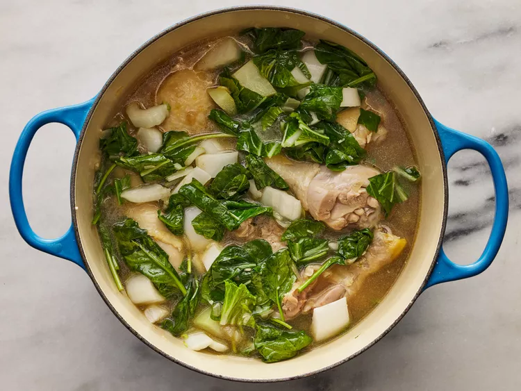

Method
-
Gather all ingredients.
-
Heat oil in a large pot over medium heat. Add onion and garlic; cook and stir until fragrant, about 2 minutes.
-
Add ginger and fish sauce; cook and stir for 1 to 2 minutes. Stir in chicken and cook for 5 minutes.
-
Pour in chicken broth and cook for 5 minutes. Add squash and simmer until chicken is no longer pink in the center, about 10 minutes. Season with salt and pepper.
-
Add bok choy and spinach; cook until spinach is just wilted, 1 to 2 minutes. Serve hot.
